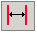
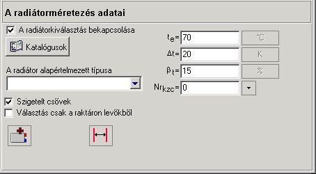
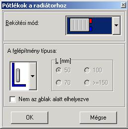
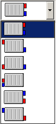
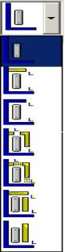
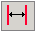

4.3.4. A radiátormegválasztás adatai
„A
radiátormegválasztás adatai” pozícióban a felhasználó bekapcsolhatja a fûtött
helyiségben levõ radiátorok megválasztásának opcióját a „Radiátormegválasztás
bekapcsolása” mezõre kattintva. Itt található a „Katalóguskezelés”  nyomógomb is, amely lehetõvé teszi, hogy
kiválasszuk a szükséges radiátorkatalógusokat. A megfelelõ nyomógombra
kattintva a felhasználó ki tudja õket választani a „Radiátorok” könyvjelzõrõl.
nyomógomb is, amely lehetõvé teszi, hogy
kiválasszuk a szükséges radiátorkatalógusokat. A megfelelõ nyomógombra
kattintva a felhasználó ki tudja õket választani a „Radiátorok” könyvjelzõrõl.
A radiátormegválasztásnak elõzetes jellege van, azaz a víz kihûlése a szakaszokban becsléssel van figyelembe véve, a radiátorok méretének az épületben levõ szintek számától és az aktuális épületszinttõl függõ kiegészítéssel történõ megnövelésével. Ezért az Instal-heat&energy programmal kiválasztott radiátorok különbözhetnek az Instal-therm programmal kiválasztottaktól – az elõbbiek általában kisebbek lesznek. Ezért ajánlatos a fûtési rendszer pontos méretezését az Instal-therm programban végrehajtani.
A radiátorok hõteljesítményét befolyásoló további tényezõk: a radiátor elhelyezése a helyiségben, a takarása, az alkalmazott termosztatikus szelep, valamint a rendszer bekötési módja szintén megfelelõ szorzókkal vannak figyelembe véve. Ezek a szorzók a radiátoroknak a megfelelõ „Radiátorok adatai” és a

„Radiátorok mérethatárai” nyomógombok segítségével meghatározott, megadott tulajdonságai alapján automatikusan vannak megállapítva.A soron következõ mezõkben a felhasználó kiválasztja az alapértelmezett radiátortípust, valamint korrigálhatja az alapértelmezetten kitöltött olyan adatokat, mint: az elõremenõ hõmérséklet, a fûtõközeg kihûlése a radiátorban, pótlék a radiátor méretéhez, valamint az épületszint száma, amelyen a forrás található.
A „Szigetelt csövek” mezõre kattintva a felhasználó deklarálja szigetelés használatát a központi fûtés rendszer csövein. Ilyen esetben a víz kihûlése a csövekben korrigálva van, tekintettel a víznek a szakaszokban történõ kihûlését figyelembe vevõ kiegészítõ tényezõnek a felére csökkenésére a szigeteletlen csövekhez viszonyítottan.
! A felhasználó „A radiátormegválasztás adataiban” megadja az alapértelmezett radiátor adatait, amelyet ezután alapértelmezett típusként lehet használni a fûtött helyiségekben.

„A radiátormegválasztás adatai” ablakban a szerkesztõ mezõk a következõk:
A radiátormegválasztás bekapcsolása
A mezõ kijelölése lehetõvé teszi a radiátorok megválasztását a fûtött helyiségekben.
Alapértelmezett radiátortípus
A tervben felhasználható, alapértelmezett radiátortípus kiválasztásának mezõje. A terv adatainak „Szabványok és számítási opciók” pozíciójában kiválasztott radiátorkatalógus.
Szigetelt csövek
A mezõ kijelölése szigetelés deklarálását jelenti a központi fûtés csövein, ami miatt a víznek a szakaszokban való kihûlése hatását figyelembe vevõ tényezõ a felére csökken.
Csak raktárról kapható
Mivel az egyes radiátorméretek különbözõ hozzáférhetõségi státuszú katalógusokban lehetnek elmentve – raktárról vagy megrendelésre kapható –, ezért a megválasztási opciókban ki kell választani, milyen hozzáférhetõségi státuszt kell figyelembe venni. A mezõ kijelölése a kiválasztott típusú radiátor megválasztását eredményezi, az alap választékban, a raktárról hozzáférhetõek közül.
te/qe – a radiátorok alapértelmezett elõremenõ hõmérséklete [0C]
A program által beírt, alapértelmezett érték: te = 900C. A felhasználó önállóan megadhatja a radiátor elõremenõ hõmérsékletét.
Dt/q – Alapértelmezett kihûlés a radiátorra [K]
A program a mezõt az elõremenõ és a visszatérõ hõmérsékletek különbségébõl következõ 20 K standard értékkel tölti ki A felhasználó önállóan megadhatja a fûtõközeg kihûlését.
bt – Kiegészítés a radiátor méretéhez
Ez a mezõ a tervbe beírt adatoknak a valóságtól való eltérésébõl következõ hõveszteség növekedést veszi figyelembe. A program a szorzóhoz 15% alapértelmezett értéket rendel. Ha a nem vesszük figyelembe ezt az eltérést, akkor 0 értéket kell beírni.
Nrkzc – A forrást tartalmazó szint száma
A mezõ a forrás térbeli elhelyezését veszi figyelembe az épület fûtési rendszerében. Annak az épületszintnek a kiválasztása, ahol a forrás található, lehetõvé teszi a kihûlés becslését a csõrendszerben.
! „A forrást tartalmazó épületszint száma” adja meg a hõforrás létezését a megfelelõ épületszinten. Figyelni kell arra, hogy az épületszint száma a tényleges sorszámot jelenti a 0-tól kezdve. Az elsõ betett szint, a típusától és a beírt nevétõl függetlenül mindig 0-ás számú. Ajánlott, hogy a forrás behelyezésekor az épületbe használjuk a nyomógombot. Lehetõvé teszi a helyes épületszint-szám kiválasztását.
Továbbá, a  nyomógombot
használva, ki kell jelölni a megfelelõ, a radiátornak a helyiségben való
elhelyezésére, a rendszerhez való bekötésére, valamint a radiátor takarási
adataira vonatkozó mezõt.
nyomógombot
használva, ki kell jelölni a megfelelõ, a radiátornak a helyiségben való
elhelyezésére, a rendszerhez való bekötésére, valamint a radiátor takarási
adataira vonatkozó mezõt.

A „Bekötési mód” legördülõ mezõben a felhasználó kiválaszthatja a tervnek megfelelõ radiátorbekötési konfigurációt. A piros szín a radiátor betáplálását jelenti a fûtõközeggel, a kék pedig annak visszatérését a rendszerbe.

Hasonlóan a „Test típusa” mezõben is egy legördülõ listából lehet kiválasztani a radiátor geometriai paramétereit, a felhasználó a választólista jobboldalán adja meg a radiátortest jellemzõ méreteit.

A „Elhelyezés az ablak alatt” mezõ kiválasztásával a felhasználó megadja a radiátor elhelyezését:
- a belsõ falnál, távol a külsõ faltól, erkélyajtótól és ablaktól vagy
- a helyiség födéme alatt.
A radiátor
méreteire vonatkozó követelményeket, úgymint a magasságot, hosszúságot és
mélységet a 
Az ablak meghívása a következõ lehetõségeket biztosítja a radiátor méreteinek szerkesztésére, meghatározva ugyanakkor a megválasztásának módszerét is.
A radiátor méreteit a „Megadott” opció segítségével lehet megadni, amely lehetõvé teszi a radiátor kiválasztását a megadott méreteknek megfelelõen.
A „Legkisebb a tartományból” megválasztási opció lehetõvé teszi a legkisebb méretû radiátor kiválasztását a „Min [mm]” minimális és „Max [mm]” maximális méretekkel meghatározott tartományból. Ha mindhárom méretre ezt a megválasztási opciót adjuk meg, a radiátorokat a program a következõ méretprioritások szerint választja meg: mélység, magasság, hosszúság. Ez azt jelenti, hogy a tartományból a legkisebb mélységû radiátor lesz kiválasztva, majd a magasságot veszi a program figyelembe, végül pedig a radiátor hosszát.
A „Falmélyedésbe (igazítás)” opció lehetõvé teszi, hogy a radiátort a falmélyedés méretéhez válasszuk meg, a radiátor helyeként szolgáló falmélyedés méreteinek és a beépítési méreteknek (ami a falmélyedés és a radiátor méreteinek különbségébõl keletkezik) megadásával. Az opció lehetõvé teszi annak a radiátornak a kiválasztását, amelyek méretei maximálisan passzolnak a falmélyedés méreteihez, és hozzáférhetõ a „Magasság” és „Hosszúság” méretek alapján. Ha mindkét méretet kijelöljük, akkor az elsõbbség a magasságra fog vonatkozni, majd a hosszúságra. A mélység a tartományból legkisebbként maradhat megadva, vagy meg lehet adni kézzel.
A radiátor magasságának megadásához a következõ mezõk szolgálnak:
Megadott – ennek a mezõnek a kiválasztásával a felhasználó megadhatja a radiátor magasságát a „Méret (mm)” mezõben,
A legkisebb a tartományból – lehetõvé teszi a magasság minimális értékének megadását a „Min. (mm)” mezõben, valamint a maximális értékének megadását a „Max. (mm)” mezõben. Meg van adva alapértelmezetten elõre beállított megválasztási tartomány, amelyet lehet szerkeszteni.
A beugróba (hozzáigazítás) – lehetõvé teszi a falmélyedés méreteinek megadását a „Falmélyedésbe igazítás” mezõben, valamint a beépítési méretek meghatározását a „A beépítéshez min.” A beépítési méret a falmélyedés és a radiátor magassága közti különbség. A mezõ az épületszint szerkesztõ ablakában megadott értékek alapján van kitöltve (lásd az 4.5.1fejezetet).
A radiátor hosszúságának megadásához a következõ mezõk szolgálnak:
Megadott – ennek a mezõnek a kiválasztásával a felhasználó megadhatja a radiátor hosszúságát a „Méret (mm)” mezõben,
A legkisebb a tartományból – lehetõvé teszi a hosszúság minimális értékének megadását a „Min. (mm)” mezõben, valamint a maximális értékének megadását a „Max. (mm)” mezõben. Alapértelmezésként meg van adva egy elõre megállapított kiválasztási tartomány, amit szerkeszteni lehet.
A beugróba (hozzáigazítás) – lehetõvé teszi a falmélyedés méreteinek megadását a „Falmélyedésbe igazítás” mezõben, valamint a beépítési méretek meghatározását a „A beépítéshez min.” A beépítési méret a falmélyedés és a radiátor hosszúsága közti különbség. A mezõ az épületszint szerkesztõ ablakában megadott értékek alapján van kitöltve (lásd az fejezetet).
A radiátor mélységének megadásához a következõ mezõk szolgálnak:
Megadott – lehetõvé teszi a felhasználónak a radiátor mélységének megadását a „Méret (mm)” mezõben,
A legkisebb a tartományból – lehetõvé teszi a mélység minimális értékének megadását a „Min. (mm)” mezõben, valamint a maximális értékének megadását a „Max. (mm)” mezõben.